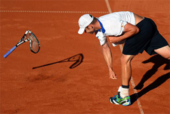
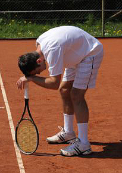

Previous: Wimbledon 2008 A Different Story | 🏠 Strategy Home | Next: Winning Matches - Game plan
Winners And Errors
Comprehensive unified tennis knowledge base — Fundamentals, Stroke Analysis, Reference Library, and more
Winners And Errors
Craig O'Shannessy

What is the real significance of errors in First Strike Tennis?
Tennis is a game of errors. Lots and lots and lots and lots of errors. Understanding errors and how to extract them from opponents is the real key to match success.
But wait! Haven't I just spent the last few articles convincing you that the key to winning tennis is First Strike points, winning points that are decided by serves, returns and at most one more shot? (Click Here.)
Doesn't that imply that winners in these brief exchanges are the essence of successful match play? The answer is no. And here we discover the subtlety and the complexity of what really constitutes winning tennis in this game we love.
Yes, the majority of points are first strike at all levels, lasting less than 4 hits. But the majority of those 4 hit points are decided by errors.
Is that a paradox? Possibly yes. Is understanding that paradox the key to be the best player you can possibly be, reaching your potential, and possibly, beating players you may have never beaten or thought you could beat by looking at the game in a new way?
Errors are the difference in who wins the four hit battles. And let's not forget about points that last 5-8 hits, a category that represents another 20% or more of total points. It's equally critical there. The secret is to reduce your own errors while adopting strategies that cause your opponents to make the errors themselves.
Is it important to distinguish between types of errors?
But What Is An Error?
Obviously, there are two basic ways a point can end in tennis – a winner and an error. But to understand how all this works we have to take a look at what the term error really means.
I define "error" differently than the way it is defined in conventional analysis. This eliminates the confusion that allows us to simplify how we understand matches.
Usually, errors are divided into 2 categories. Unforced errors and forced errors. I am abandoning that distinction. For me an error is an error.
Why do I look at the game this way? First, the category so-called of "unforced errors" is flawed in the way it is collected or registered.
In the pro game, for example, "unforced errors" are a judgment call made by unpaid volunteers who usually lack the experience to make that call accurately over the course of a match. So the results are often skewed.
Secondly, the way matches are usually tallied the role of so-called unforced errors doesn't make statistical sense. For example, if you add up unforced errors and winners, they don't account for the total number of points played.
The rest fall into some gray area. Almost every shot has some kind of pressure to it so it's best to focus on one simple distinction between winners and errors.
Let's make the simple distinction between a winner and an error.
The Evidence
So here is the amazing statistic regarding errors that will rock the way you look at the game. Two thirds of all points are decided by errors.
At all levels from pros down to 12 and under juniors, the numbers are the same. Two thirds. I said errors are critical.
Yet it is amazing how these numbers are not recognized by commentators and so called experts, numbers that truly dictate outcome and should therefore also dictate how we watch, play and coach the sport.
Here is the data for the four Grand Slam events in 2012. I looked at a total of well over 100,000 points.
The range was this. At Wimbledon 65% of all points were decided by errors at Wimbledon. At the U.S. Open, 75% of all points were decided by errors.
Australia and Paris were in between. The average was over 70% of all Grand Slam points were decided by errors for the best men in the world.
2012 Grand Slams: Men
Men
Points
Winners
Errors
Winners %
Errors %
Australian Open
27,440
6,789
20,651
25%
75%
Roland Garros
28,233
9,323
18,910
33%
66%
Wimbledon
29,290
10,203
19,087
35%
65%
U.S. Open
29,038
7151
21,887
25%
75%
Totals
114,001
33,474
80,527
29.3%
70.7%
And the women? For the 2012 Slams those numbers were slightly higher. The range was 69% at the French to over 80% at the U.S. Open. The average? Over 74% of all points decided by errors.
2012 Grand Slams: Women
Women
Points
Winners
Errors
Winners %
Errors %
Australian Open
16,479
3,678
12,801
22%
78%
Roland Garros
17,283
5,323
11,960
31%
69%
Wimbledon
17,741
5,384
12,357
30%
70%
U.S. Open
16,862
3,267
13,595
19%
81%
Totals
68,315
17,652
50,663
25.9%
74.1%
We've looked at many other pro data sets since. The results show that at least two thirds, 66% of all points are decided by errors. It's a constant.

How should you think about errors in your game?
But What About Me?
But as with the First Strike Numbers, the question you may have, and the question I am often asked by coaches is this: so what? Do these pro numbers apply to any other levels?
And as with First Strike numbers the answer is yes. Warren Pretorius of Tennis Analytics has run that numbers. College tennis. Junior tennis. 18 and under junior tennis, all the way down to 12 and under junior tennis.
The numbers are all the same. Two thirds or more of all points are decided by errors. That is truly amazing. A magic level in our game that transcends age, ability, and level. But what does it mean for how you play?
How do you as a player adapt your game and your match strategy to these two seemingly paradoxical facts?
You need to win first strike points. But two thirds of those points or more will be decided by errors. How do you play aggressively without making errors yourself and simultaneously extract errors from your opponents?
And I have the answer or answers to that question. Stay tuned! In the next article we will look at 8 different strategic approaches that will give you the advantage based on the actual reality of how tennis matches are played and won.

Craig O'Shannessy is widely recognized as the world leader in analyzing tennis statistics, tennis strategy, and applying his insights in coaching. His research has uncovered the real magic numbers in winning tennis across all levels of the game. He writes for the ATP Tour website and the New York Times among others elite publications.
He has coached on the tour for 20 years working with players including Kevin Anderson, Amer Delic, and Rajeev Ram. His website Brain Game Tennis offers detailed analysis and training programs based on his research that have helped thousands of players around the world.

Click Here to visit Craig's site and check out his amazing training products!
Source: tennisplayer.net archive — Winners And Errors.docx (John Yandell teaching library, 2002-2022). Extracted and rendered as HTML for Tennis Future Lab.